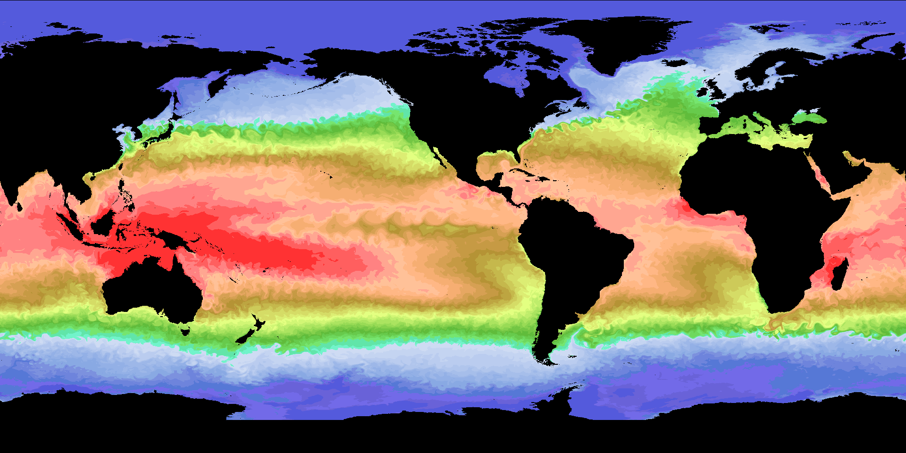

NEMOSIM - Cook book (8)¶
User tutorial on JASMIN¶
The quickest and easiest way to learn how best to use all the options available is to simply try a few projects for yourself. This page details how to get up and running quickly on JASMIN and guides you through the various steps from the interactive production of a single frame through to the parallel production of multiple frames using the LOTUS cluster and the final creation of a quality mp4 movie.
Most of these steps have been mentioned in previous cookbook entries so this will provide a useful revision exercise and is presented as a simple recipe. Insights into the decision process at each stage are included so that users can easily adapt this recipe for their particular needs.
1. The setup¶
The first step is to make sure the environment is set correctly to enable access to the
correct binaries and libraries. This applies to whichever of the scientific analysis machines
you choose to login to (e.g. sci2.jasmin.ac.uk ). The following environment variables
should be sufficient:
export PATH=/home/users/acc/DEVTOOLS/bin:/home/users/acc/TOOLS/bin:$PATH
export LD_LIBRARY_PATH=/home/users/acc/DEVTOOLS/lib:/home/users/acc/TOOLS/lib:$LD_LIBRARY_PATH
which can be added to your .bashrc but may be best done on a session by session basis in
case any of my other tools interfere with your own versions.
For the purposes of this tutorial, you may also wish to create the following working directory:
mkdir CB8_WORK
cd CB8_WORK
cp ~acc/forMOCC/mxl_list .
cp ~acc/forMOCC/CB8_examples .
cp ~acc/forMOCC/mk_HD.slurm
2. Decide on your input data¶
It is not strictly necessary to do this at this stage but given the dispersal of model output across multiple GWS’s it is useful to list the possible source datasets for a project. For example:
./mxl_list
contains a list of 5-day mean biogeochemical prognostic variables for 10 years from 2006 relative to the:
/gws/nopw/j04/nemo_vol1/ORCA0083-N006/means
directory. I.e.:
head -5 mxl_list
2006/ORCA0083-N06_20060105d05P.nc
2006/ORCA0083-N06_20060110d05P.nc
2006/ORCA0083-N06_20060115d05P.nc
2006/ORCA0083-N06_20060120d05P.nc
2006/ORCA0083-N06_20060125d05P.nc
.
.
tail -5l mxl_list
2015/ORCA0083-N06_20151211d05P.nc
2015/ORCA0083-N06_20151216d05P.nc
2015/ORCA0083-N06_20151221d05P.nc
2015/ORCA0083-N06_20151226d05P.nc
2015/ORCA0083-N06_20151231d05P.nc
This will be the set of 1/12th degree input files used for this tutorial (actually this can be considered more of a template set since all the dataset types follow a common naming convention and the other types can be accessed by simple editing of these names) I.e.:
fileP=2006/ORCA0083-N06_20060105d05P.nc
fileT=${fileP/d05P/d05T}
fileU=${fileP/d05P/d05U}
fileV=${fileP/d05P/d05V}
fileW=${fileP/d05P/d05W}
fileI=${fileP/d05P/d05I}
fileD=${fileP/d05P/d05D}
for f in $fileP $fileT $fileU $fileV $fileW $fileI $fileD; do echo $f; done
2006/ORCA0083-N06_20060105d05P.nc
2006/ORCA0083-N06_20060105d05T.nc
2006/ORCA0083-N06_20060105d05U.nc
2006/ORCA0083-N06_20060105d05V.nc
2006/ORCA0083-N06_20060105d05W.nc
2006/ORCA0083-N06_20060105d05I.nc
2006/ORCA0083-N06_20060105d05D.nc
3. Decide on the output image size¶
The choice of output image size is determined by the end application. For the MOOC videos, for example, top-end 4kUHD resolution images were produced with each frame being 3840x2160 pixels. This is 16:9 aspect ratio (widescreen) broadcast quality but excessive for most applications. Images destined for the PufferSphere need to have a 2:1 aspect ratio and the highest resolution for that device is 3840x1920. For many presentations and on-line applications, an HD resolution of 1920x960 is sufficient and is recommended here for exploratory work. Sticking to standard sizes means there is every likelihood that the mapping matrix will already exist and will not need to be created for each new project. To this end it is a good idea to store map files in a standard location. My map files, for example, are kept in:
/home/users/acc/TOOLS/MAPS
and ncdump can be used to check their provenance:
ncdump -h /home/users/acc/TOOLS/MAPS/latlon_1920_p083.nc | grep _size
:Source_size = 4322, 3059 ;
:Image_size = 1920, 960 ;
Which clearly identifies a mapping from the 1/12th degree model to a 1920x960 image. Don’t forget that if the mapping file doesn’t exist it will be created the first time it is needed; just be careful when parallelising frame production to either launch the first frame separately or to ensure the map file pre-exists.
4. Determine the mask and coordinate options¶
Although not essential, there is benefit in having a proper bathy_level mask file for the source grid. This allows nemosim to correctly distinguish between land and seabed areas for slices below the surface ocean. It also provides a reference for coordinates which avoids any concerns as to whether or not the source file contains complete coordinate fields. There can be, for example, issues with source data that was rebuilt from distributed fields produced using land suppression. In some cases, coordinate fields may be left unset over land-only regions. For the ORCA12 grid a suitable bathymetry exists in:
/home/users/acc/forYOOL/dom0083/bathy_level.nc
5. Decide on variable and suitable range¶
Choosing which variable to plot clearly depends on the project aim. Deciding on the limits for the colour scale can be trickier. In cases where the physical range over an annual cycle is well-known (such as surface temperature), it is possible to make a sensible choice straight off. For less well-known properties or properties subject to drift over the course of a simulation, it may be necessary to resort to a trial and error approach. Sub-sampling the time-series is usually key to this; producing one frame per month for the first and last years should provide a clear indication of the suitability of the range set.
This decision can also be influenced by the choice of colour-scale, since the human-eye has preferences for certain colours, so it is a good idea to try different palettes at this stage too.
6. Produce a trial frame¶
For this tutorial, we will keep things simple and use SST. Actually, its not so simple
because the name changes during the course of the simulation from potemp to thetao,
but more on that later. At least, the range and palette should be obvious choices. Here
is a first pass at producing a decent image:
nemosim -usemap /home/users/acc/TOOLS/MAPS/latlon_1920_p083.nc \
-k 1 -t 1 -d potemp -limits -2.0 30.00 \
-bcoord -bathy /home/users/acc/forYOOL/dom0083/bathy_level.nc \
-sw 0.0 -90. -ne 360. 90. -no_offset -r 1920 960 -cs pastel2.pal \
-f "/gws/nopw/j04/nemo_vol1/ORCA0083-N006/means/2006/ORCA0083-N06_20060105d05T.nc" \
-o ./example19a.png
which produces this:
{kind=link}
Here is a line by line explanation of the command:
Name the mapping file to be created (or in this case used, since it pre-exists):
nemosim -usemap /home/users/acc/TOOLS/MAPS/latlon_1920_p083.nc \
Set the z-level and time-index for extraction; name the variable to be extracted and set the lower and upper bounds for the colour-scale:
-k 1 -t 1 -d potemp -limits -2.0 30.00 \
Set to use coordinates from the bathy_level file and name this file:
-bcoord -bathy /home/users/acc/forYOOL/dom0083/bathy_level.nc \
Set the geographical limits for the image. Note this is important for PufferSphere content since the 2:1 aspect image must cover the global extent. If these bounds are not set explicitly, the image will be filled by the model’s coverage only and this does not extend down to the South Pole. Note, also, that these limits define the extent of the image but not necessarily the corners of the image. Because ORCA12’s first column is at around 73E the left-hand edge does not start at 0E. The
-no_offsetoption ensures the image cyclicity is treated correctly. The remaining arguments define the image size and which colour palette to use.:-sw 0.0 -90. -ne 360. 90. -no_offset -r 1920 960 -cs pastel2.pal \
Set the input source data file:
-f "/gws/nopw/j04/nemo_vol1/ORCA0083-N006/means/2006/ORCA0083-N06_20060105d05T.nc" \
Finally, set the output image filename:
-o ./example19a.png
Note, if you really need control over the longitude of the left-hand edge for global
images then simply ‘roll’ the image after creation. The ImageMagick mogrify
command will change existing images, but use the same arguments with convert to test
settings first before overwriting existing images. For example:
convert -roll +389+0 example19a.png example19b.png
where 389 is the result of: (1920.0/360.0 * 73.0), will roll the image by 73 degrees:
{kind=link}
This is also a good way to check that the image is truly cyclic since any edge effects will be easy to spot as discontinuities in the Indian Ocean. Any such edge effects will only be amplified on the PufferSphere which is why many other packages are unsuitable for generating images for this device.
Set a different background colour¶
This aside, we are happy with the original image as a base. The next stages are to add a little dressing. First up, is to consider the land regions. The default settings have these as flat black. We are probably content with this at this stage but may wish to consider other options in the future such as setting the land areas to be transparent and overlaying our ocean fields over orographic images. This may get trickier if we add other elements such as logos or date-clocks which contain black pixels. Setting a default background as a very dark gray creates a slightly softer image and allows land areas to be uniquely targetted in any future manipulation. Adding:
-bg "#131313"
will achieve this.
Adding a logo¶
The decision to add a logo is largely project-specific. However, it is probably easier to mask or remove a logo than it is to add one later so I’d recommend adding one to every project. The caveat here is that any logo should be applied to a region of fixed colour (i.e. land) so that any future masking is simple to achieve. For PufferSphere applications, the placement needs to be as close as possible to the equator to avoid shape distortion. West Africa is the ideal location but this is better used for a date clock (see next section), so South Asia is the next best option. Sizing and positioning the logo can take a few trys so experiment on the trial image until you get it right. Here’s what I ended up with:
-logo ~acc/DEVTOOLS/NEMOSIM/NemoSim/data/NOC_logo_white.png -lsize 240 77 -lpos 0 265
Note, the size used here maintans the aspect ratio of the original logo image which is:
identify ~acc/DEVTOOLS/NEMOSIM/NemoSim/data/NOC_logo_white.png
/home/users/acc/DEVTOOLS/NEMOSIM/NemoSim/data/NOC_logo_white.png PNG 522x168
Adding a date clock¶
The final element which is vital for providing animations with a visual indication of time
progression is the date-clock. As well as suitable positioning and sizing arguments, we
also need to provide the date for each frame. In the current example, the simplest way to
extract this information is from the filename itself. This bit of sed prepares the
day, month, year argument (ddmmyyyy) from the filename:
fr="/gws/nopw/j04/nemo_vol1/ORCA0083-N006/means/2006/ORCA0083-N06_20060105d05T.nc"
dstr=`echo $fr | sed -e 's/.*ORCA0083-N06_\(....\)\(..\)\(..\).*/\3\2\1/'`
And the complete date-clock is set as:
-dateclk 56 1538 373 ${dstr}
Produce the first complete frame¶
Putting this all together completes the first frame:
bathyf="/home/users/acc/forYOOL/dom0083/bathy_level.nc"
logof="/home/users/acc/DEVTOOLS/NEMOSIM/NemoSim/data/NOC_logo_white.png"
fr="/gws/nopw/j04/nemo_vol1/ORCA0083-N006/means/2006/ORCA0083-N06_20060105d05T.nc"
dstr=`echo $fr | sed -e 's/.*ORCA0083-N06_\(....\)\(..\)\(..\).*/\3\2\1/'`
nemosim -usemap /home/users/acc/TOOLS/MAPS/latlon_1920_p083.nc \
-k 1 -t 1 -d potemp -limits -2.0 30.00 \
-bcoord -bathy ${bathyf} \
-sw 0.0 -90. -ne 360. 90. -no_offset -r 1920 960 -cs pastel2.pal \
-bg "#131313" -logo ${logof} -lsize 240 77 -lpos 0 265 \
-dateclk 56 1538 373 ${dstr} \
-f ${fr} -o ./example19c.png
{kind=link}
Producing all the frames¶
We now have all the elements required to produce the complete frame sequence. With some
simple scripting techniques a series of numbered frames can easily be produced. However,
on JASMIN we have access to the LOTUS cluster and can do better than a simple serial
script. This example uses the test queue which supports up to 8 core, 4 hour jobs and
will run through the sequence producing 8 frames simultaneously. It may be possible to be
even more ambitious than this but this will already process a 10 year sequence in under 20
minutes:
cat mk_HD.slurm
#!/bin/bash
#SBATCH --job-name=mkframe
#SBATCH --time=00:20:00
#SBATCH --nodes=1
#SBATCH --ntasks=8
#SBATCH --partition=test
#
# need jaspy for ncks:
module load jaspy
#
# function to return an uncluttered list of variables:
function ncvarlst { ncks --trd -m ${1} | grep -E ': type' | cut -f 1 -d ' ' | sed 's/://' | sort ; }
#
# setup
export OMP_NUM_THREADS=1
export PATH=/work/n01/n01/acc/TOOLS/bin:$PATH
export LD_LIBRARY_PATH=/work/n01/n01/acc/TOOLS/lib:$LD_LIBRARY_PATH
#
OUTDIR=./HD/TEM_p083
MAPDIR=/home/users/acc/TOOLS/MAPS # needs to be changed if creating new maps
#
DTADIR=/gws/nopw/j04/nemo_vol1/ORCA0083-N006/means
BINDIR=/home/users/acc/DEVTOOLS/NEMOSIM/NemoSim
LOGO=/home/users/acc/DEVTOOLS/NEMOSIM/NemoSim/data/NOC_logo_white.png
BATHY=/home/users/acc/forYOOL/dom0083/bathy_level.nc
# cs=brown2green.pal
# cs=rev/seasonal_25.pal
# cs=div_blue2darkred_18.pal
# cs=rev/darkgreenscale_25.pal
# cs=GMT_sealand_x20.pal
# cs=gurvan.pal
# cs=div_blue2darkred_86.pal
cs=pastel2.pal
if [ ! -d ${OUTDIR} ] ; then mkdir -p ${OUTDIR} ; fi
tsklist=${OUTDIR}/tasklist
if [ ! -e $tsklist ] ; then rm $tsklist ; fi
#
basecmd=(${BINDIR}/nemosim -usemap ${MAPDIR}/latlon_1920_p083.nc -k 1 -t 1 \
-limits -2.0 30.00 -bcoord -bathy ${BATHY} \
-sw 0.0 -90. -ne 360. 90. -no_offset -r 1920 960 \
-cs ${cs} -logo ${LOGO} -lsize 240 77 -lpos 0 265 -bg \"#131313\")
n=0
m=0
for fr in `cat mxl_list | sed -e's/d05P/d05T/g'`
do
nn=`printf "%4.4d" $n`
outf=$OUTDIR/temp083_$nn.png
if [ ! -f ${outf} ]; then
dstr=`echo $fr | sed -e 's/.*ORCA0083-N06_\(....\)\(..\)\(..\).*/\3\2\1/'`
var=potemp
if [ $( ncvarlst ${DTADIR}/$fr | grep -c thetao ) -eq 1 ] ; then var=thetao ; fi
echo $m ${basecmd[@]} -d ${var} -f ${DTADIR}/$fr -o ${outf} -dateclk 56 1538 373 ${dstr} >> $tsklist
m=$(( $m + 1 ))
fi
n=$(( $n + 1 ))
if [ $m -eq 8 ]; then
echo "A========Running srun==========="$nn
head -1l $tsklist
srun --gres=gpu:0 --mpi=none --cpu-bind v,map_cpu:0x00,0x01,0x02,0x03,0x04,0x05,0x06,0x07, \
--ntasks=$m --multi-prog $tsklist &
wait
echo "=========Finished srun=========="
m=0
rm $tsklist
fi
done
if [ $m -gt 0 ]; then
echo "B========Running srun==========="
head -1l $tsklist
srun --gres=gpu:0 --mpi=none --cpu-bind v,map_cpu:0x00,0x01,0x02,0x03,0x04,0x05,0x06,0x07, \
--ntasks=$m --multi-prog $tsklist &
wait
echo "=========Finished srun=========="
m=0
rm $tsklist
fi
#
sbatch mk_HD.slurm
There is plenty of scope for improving on this: exploring other queue optionsr; different placements, the use of OpenMP threads etc. Please feedback any advances.
Note the script includes a simple check that the variable (in this case: potemp) exists within each input data file. It uses ncks at the heart of this which requires the jaspy module to be loaded. There is an unfortunate change in the name of the variable part way through the sequence which is caught by this check and the correct alternative (thetao) is substituted as needed.
Encoding the video sequence¶
There are many ways to turn a numbered sequence of images into an encoded video and many of these methods will produce poor quality results unless some control is exercised over default settings. Chiefly this is because most techniques are meant for encoding video streams of real-world images where natural features are not unduly altered by slight blurring or fuzziness. When crisper edges are required and parts of the image remain static then it is often necessary to increase quality demands and except the larger files that result.
The ffmpeg utility provides one of the simplest methods and is readily available:
ffmpeg -i temp083_%04d.png -vcodec mpeg4 -vb 20M temp083.mp4
Here the quality is controlled by the -vb option (video bitrate). Try leaving this
option out and compare the results. This movie file will have to be copied off JASMIN
for viewing.